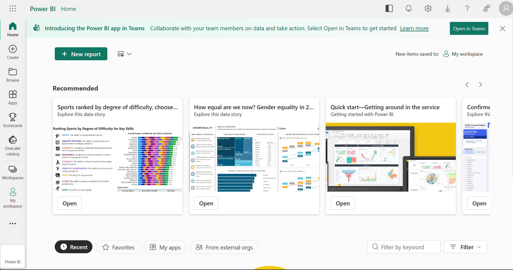

Service Site

I am a third-year student at the University of Ottawa pursuing a degree in Computer Science with a minor in Mathematics.
I am originally from Cornwall and graduated from St. Lawrence Secondary School.
I also have a strong interest in music. I play piano, which has helped me develop my creativity and discipline skills.
While I do not have official professional experience as a designer, I have completed projects that involved both the development and implementation of user interfaces. In a database course, I worked on designing an eHotels website as a course project, where I focused on creating a functional and organized user experience. I also developed a Wordle Android application as a personal project, which helped strengthen my understanding of application structure, usability, and interface design.
In the case of web design, my typical workflow consists of 4 simple steps

The process starts with planning the overall appearance of the pages and how I want them to look and function.

I then write the HTML to define the structure and layout of the elements on the page.

After that, I use CSS to style those elements so they match the intended design and visual appearance.

If needed, I then develop JavaScript code to introduce interactivity and functionality to the page.
Service Site

Memory Game

E-Commerce Site

Analytics Site